新版 Windows + MuMu 安卓回放安装手册
2026-10-21 · MuMu 安卓一体版。回放控制台、Python、原生编译器和调试器都在安卓实例内运行。Windows 只负责运行 MuMu，不必启动旧桌面桥接服务。
实测环境为 MuMu 6.6.4.0、Android 12、腾讯客户端 38.4.2。当前 APK 名称为“MuMu回放控制台 · 测试版”，包名 local.royale.replay.mumu；它和旧版“安卓回放控制台”是两个应用。
安装顺序：准备 MuMu 与匹配客户端 → 安装新版控制台 → 授予 Root 和悬浮窗 → 配置实例内 Chrome 书签 → 导入回放并自动准备 → 在游戏悬浮窗播放。
新方案替换仓库默认的旧 Windows 部署入口。旧 Windows 代码和历史发布包保留，方便回退；不需要卸载已有模拟器、清空实例或重新登录游戏。
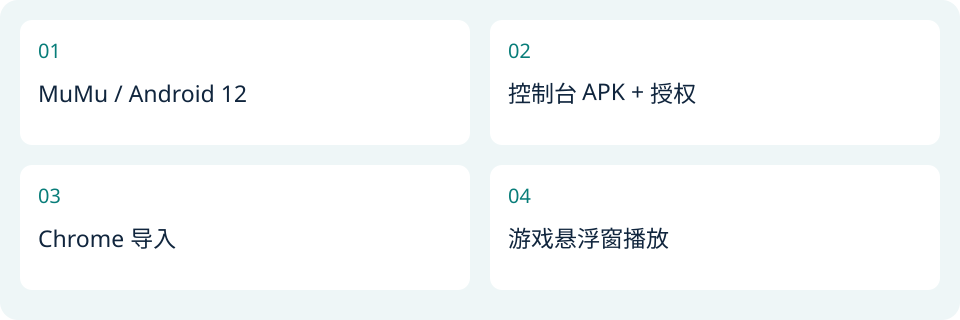
操作流程示意，非系统界面截图01 下载：选对文件，减少重复安装
发布页：https://github.com/pphy96826-coder/clashroyal-replay/releases/tag/mumu-android-20261021-hotfix1
一般使用者下载 MuMu-Replay-20261021.apk，或下载 MuMu-Replay-Offline-20261021.zip（包含同一个 APK、教程和书签）。APK 已内置全部回放运行依赖，不需要手动安装 Python、NDK、LLDB 或 Java。
实例里还没有匹配游戏时，再下载 Tencent-ClashRoyale-38.4.2.apk。它是应用安装文件，包含约 1.50 GB 游戏资源，不包含登录或账号数据。已有匹配版本则直接沿用。
游戏客户端未变化，直接使用同一仓库已有文件：https://github.com/pphy96826-coder/clashroyal-replay/releases/download/mumu-android-20261021/Tencent-ClashRoyale-38.4.2.apk 。Hotfix1 无需重复下载或重新安装已有匹配客户端。
MuMu-Replay-Runtime-Dependencies-20261021.zip 是运行依赖的独立备份；普通安装无需再解压到安卓。Source ZIP 提供适配源码，SHA256SUMS.txt 提供每个发布文件的校验值。
MuMu 安装器不重复打包。官方入口：https://mumu.163.com/download/ 。本次制作时可访问；官网后续版本可能变化，不能将最新下载版本自动当作本次实测版本。
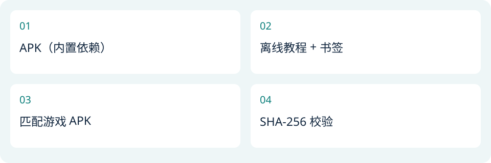
操作流程示意，非系统界面截图02 准备 MuMu 安卓实例
使用当前已打开的 Android 12 实例即可。新电脑先安装 MuMu，再创建或启动相同 Android 版本的实例。先确认实例能正常打开应用。
打开 MuMu 设置，找到 Root 权限选项并开启；保存后按提示重启该实例。仅电脑 ADB 能使用 Root，不代表安卓控制台已经得到 Root 授权，应用授权还需第 5 节操作。
MuMu 曾在本机因内存不足停止。导入很多回放时不要同时运行多个大型安卓应用；本版后台解析最多两个进程，内存紧张时降为一个，原生模拟对局始终单任务排队。
若已经安装并登录本次使用的客户端，不要删除应用数据或更换实例。教程不要求改代理、VPN、DNS 或系统安全配置。
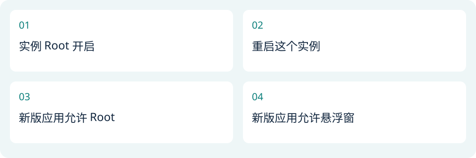
操作流程示意，非系统界面截图03 安装匹配的腾讯客户端
将 Tencent-ClashRoyale-38.4.2.apk 拖到 MuMu 窗口安装，或使用模拟器的安装 APK 功能。安装后包名须为 com.tencent.tmgp.supercell.clashroyale，版本 38.4.2。
打开游戏，由你自己完成微信／QQ 登录并进入普通大厅。如出现“是否开启 MuMu 加速服务”，可勾选“不再提示”后选择“不加速”，避免自动刷新客户端时再次阻挡。
本适配锁定游戏库完整 SHA-256。检测到版本不匹配时会停止；不要通过修改哈希、跳过检查或安装其他地区版本强行继续。
游戏库 libg.so 的 SHA-256：c6b2482a2f1fbd2e15c99df7fb18ba3d5596b77b3a81930d3638241a3c37fe55。保持游戏已加载到大厅，不要停在登录页或真实在线对局中。
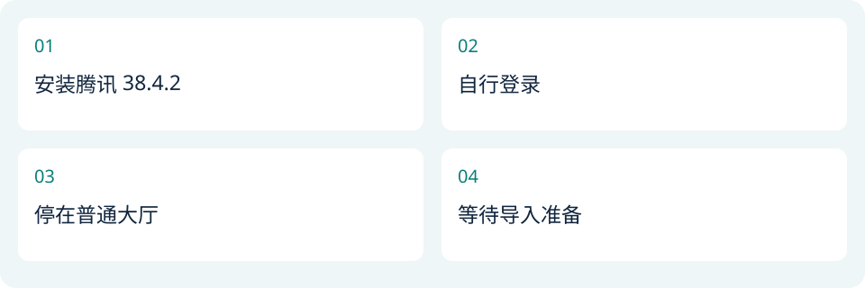
操作流程示意，非系统界面截图04 安装新版回放控制台
把 MuMu-Replay-20261021.apk 拖入同一个 MuMu 实例，安装后打开“MuMu回放控制台 · 测试版”。首次进入会准备并校验内置环境，耗时比以后启动长。
已经安装本次 MuMu 测试版时可覆盖安装，Root、悬浮窗设置和队列通常保留。不要先卸载；卸载会删除该应用的私有回放记录。
如果桌面同时有“安卓回放控制台”和“MuMu回放控制台 · 测试版”，本教程使用后者。旧应用的授权不会自动转给新应用。
本包使用项目开发签名，不是微软、网易、腾讯或 Supercell 的官方应用。APK 的 v2/v3 签名与文件 SHA-256 已核验；当前构建为 2026.10.21-mumu-dev24。
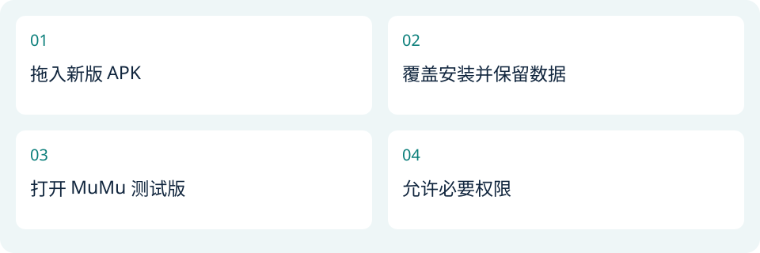
操作流程示意，非系统界面截图05 授予控制台 Root 与悬浮窗
首次执行本机准备时，如果超级用户弹出授权框，选择“允许”，并按界面选项记住／始终允许。授权对象必须是“MuMu回放控制台 · 测试版”。
如果曾拒绝：打开安卓实例里的“超级用户”，找到这个新应用，将状态改为允许／始终允许。不要只给旧版控制台授权。
在安卓设置的应用特殊访问权限中找到“显示在其他应用上层／悬浮窗”，允许新版控制台。回到控制台，点“开启游戏内悬浮控制台”，屏幕边缘应出现圆形“回放”按钮。
点圆形按钮展开，拖动它移动位置。关闭悬浮窗后可在完整控制台重新开启。应用不要求无障碍或录屏权限。
操作流程示意，非系统界面截图06 使用模拟器里面的 Google Chrome
在这个安卓实例的 Google Play 中安装 Google Chrome，打开并确认能访问 RoyaleAPI。Google Play 入口：https://play.google.com/store/apps/details?id=com.android.chrome 。
本机 Chrome 已能正常使用；Edge 在本机曾闪退，因此本教程选择 Chrome。电脑桌面的 Chrome／Edge 与模拟器内部浏览器是不同应用，不要把书签保存到电脑浏览器。
进入完整回放详情页，例如 https://royaleapi.com/replay?tag=… ，等待回放时间线与卡牌加载完。网站首页、新标签页或不完整 HTML 都不能代替完整 Replay 页面。
本路线使用书签入口，不需要安装旧 Windows Edge 扩展，也不需要启动 Windows 原生消息宿主。
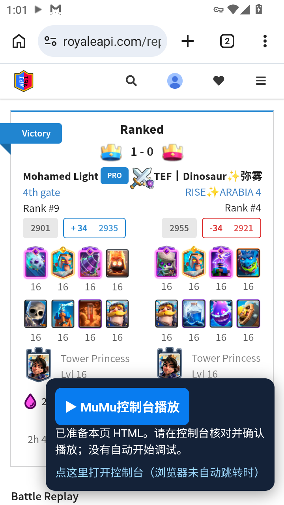
MuMu 安卓实例实机截图：Chrome 回放页面与书签按钮07 安装 Play Replay 书签
打开发布包中 Chrome/Play-Replay-MuMu.txt，全选复制全文。在实例内 Chrome 新建或编辑一个书签，名称填 Play Replay，网址替换为文件的全部内容并保存。
网址开头必须保留 javascript:，不能变成 http://javascript… 。如果粘贴时前缀被省略，请手动补回。使用本包短入口；此前较长的脚本在本机曾出现保存不完整、没有按钮的问题。
回到完整 RoyaleAPI 回放页，在地址栏输入 Play Replay，选择带书签图标的那一条建议。检查版会先提示“MuMu书签已运行”，关闭提示后应出现“MuMu控制台播放”按钮。
没有按钮时，临时将书签网址改为 javascript:alert('MuMu OK')。能弹窗说明书签执行正常，再恢复文件全文；出现 ERR_EMPTY_RESPONSE 常见原因是保存成了普通 http 网址。
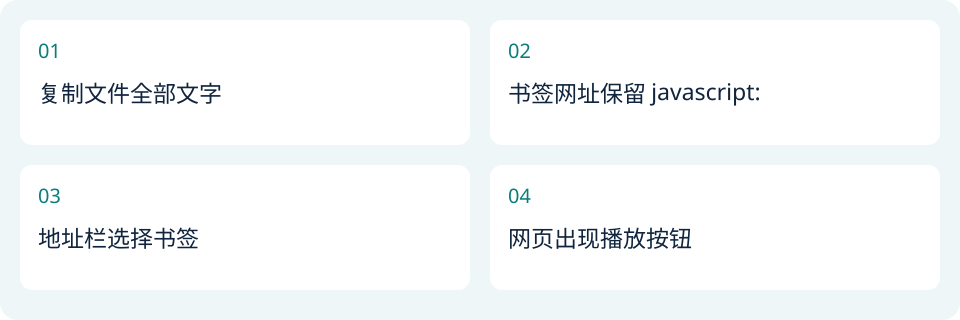
操作流程示意，非系统界面截图08 导入后自动准备，不必回控制台启动
点网页“MuMu控制台播放”；若浏览器没有自动切换，再点按钮下方“点这里打开控制台”。完整 HTML 经压缩、SHA-256 与回放编号检查后，自动保存到待播队列并打开游戏。
导入成功即启动后台完整 HTML 解析与校验；空闲大厅中的队列第一场会继续自动校准发牌、原生预演整局和核对 JSON。收到链接不代表开始播放，必须由你在悬浮窗点播放。
列表后面的回放先做可以独立进行的解析与校验，显示“来源已解析 · 等待前一场”。第一场显示“准备中”或“已就绪”。这些状态不同：来源已解析不等于已通过原生预演。
同一游戏进程不能同时原生预演多场，也不能在当前播放时再附加另一个模拟器调试任务。上一场结束并刷新客户端后，下一场按顺序进入原生准备。
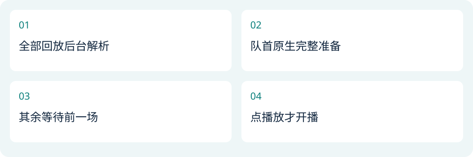
操作流程示意，非系统界面截图09 准备进度与加速方式
资料准备、发牌校准、整局预演、JSON 核对依次显示。当前整局准备仍需要一定时间；网页缺少随机种子，遇到随机技能与终局不符时，会有界尝试最多 60 个种子，可能增加很多等待。
后台解析最多并行两个进程，低内存时只开一个。相同 HTML 的纯解析结果可复用，但每次播放仍创建新任务，重新检查客户端代际、资源、代码和原生执行结果。
同一实例的资料读取阶段实测由 69.95 秒降到 8.01 秒；这只是一段准备，不是整个开播仅需 8 秒。调试连接的收尾等待已消除，自检约 6.5 秒降到约 2 秒。
原生准备期间保持游戏在前台大厅。切到全屏浏览器后，后台 HTML 解析可继续；原生准备会显示等待游戏前台大厅，回到游戏后继续，不会冒充已就绪。
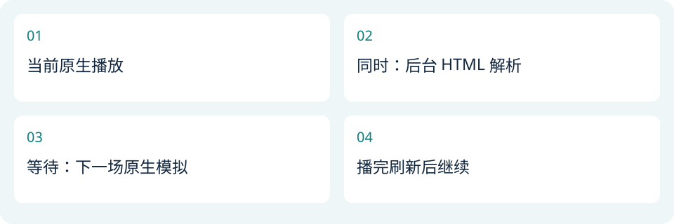
操作流程示意，非系统界面截图10 停止匹配，播放当前最优
仅在实际打出猎人，或实际使用了可明确归属骷髅帝王的技能，且整局终局仍不一致时搜索种子。卡组里带了卡但未使用、其他英雄的技能、普通对局的塔血差异，都不会触发种子重试。多个技能单位导致无法明确归属的情况不猜测。
随机种子数值与终局优劣没有单调关系，不能使用二分法可靠排除一半候选。停止按钮保留；只有符合搜索条件且已经有完整预演结果时出现。
至少已经有一场完整原生预演结果、并进入随机种子匹配后，悬浮窗与完整控制台都会显示“停止匹配，播放当前最优”。点击一次即可提交停止请求。
如果一个原生步骤正在运行，会等它安全结束；刚完成且更好的对局仍可参与比较。尚未执行完的发牌校准、技能分支或失败候选不会被当作最优结果。
停止后仍须完成选中结果的原生 JSON 核验和战场加载，然后自动开播。页面会保留“终局近似／仅胜负相同／与网页不符”的实际标签，不会因你点了按钮就改成完全一致。
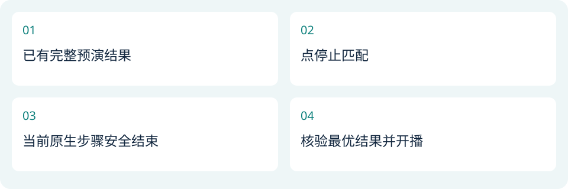
操作流程示意，非系统界面截图11 在游戏悬浮窗播放
在游戏界面点圆形“回放”按钮。第一场显示“已就绪”后点“播放下一个”，控制台会核对本场来源与当前游戏进程，加载已验证的战场。无需返回完整控制台点启动。
尚未准备完成时也可点“准备完成后播放”；这一场通过准备后自动开播。已经有回放在播放时，新导入的回放只入队，不替换当前对局。
确认原生画面实际推进后，进度卡移除，悬浮面板自动收起。游戏画面里的暂停与倍速沿用游戏功能。悬浮窗的倍速选择作用于以后准备的场次，已准备的行保留自己的设置。
置顶会把该场提前到可调整的位置；已准备的第一场不被无声替换。删除已准备行需要再次确认，因为释放翻译层资源可能需要刷新该游戏进程。
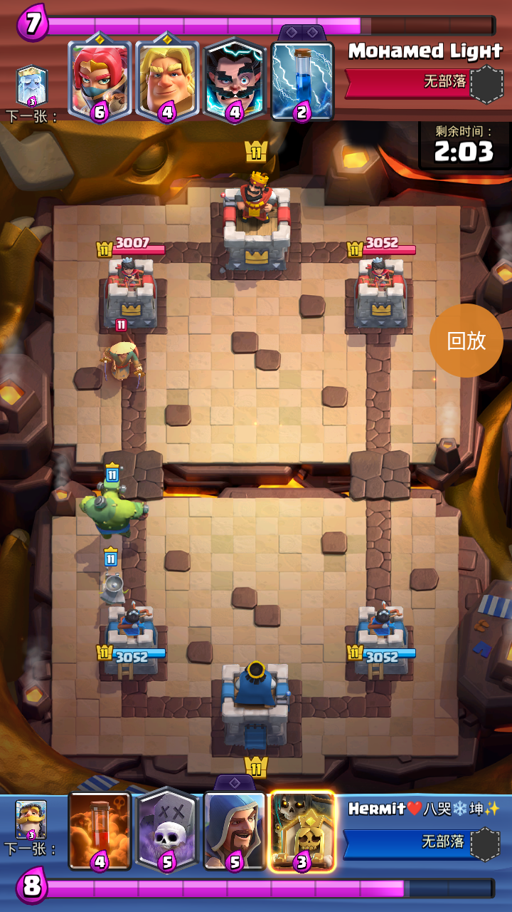
MuMu 安卓实例实机截图：本地原生回放正在实际播放12 播完、重放、退出和客户端强退
终局依据原生回执核验，不是根据网页时长猜测。播放结束后自动刷新所属游戏客户端并返回控制台，显示“重放本场／退出回放”；原始 HTML 和验证记录保留。
如果队列下一场已开始准备，上一场的重放与退出选项仍保留。重放读取上一场自己的原始 HTML 并校验；退出会暂停自动准备，不会自动开播队列。
播放中停止回放需确认。系统只处理当前工具拥有的游戏进程，不重启 MuMu。如果你直接强制关闭游戏，观察器确认旧进程已消失后解除占用，控制台恢复操作。
已经准备就绪但还未播放的结果仅对当前游戏进程有效；手动重开游戏后需要重新准备，不能继续使用旧进程中的地址或任务。
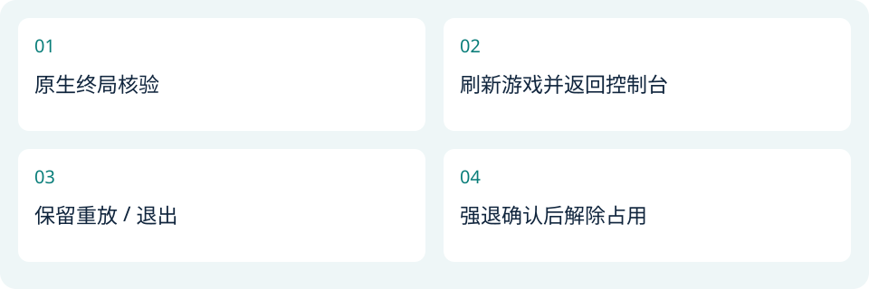
操作流程示意，非系统界面截图13 常见问题与文件核验
没有悬浮按钮：回完整控制台开启悬浮窗，检查新应用的上层显示权限。Root 被拒绝：到超级用户允许新版应用，ADB Root 不能代替应用 Root。
书签没有反应：确认正在完整回放详情页，从地址栏选择书签建议，检查 javascript: 前缀和文件全文。导入后没有自动回游戏：先打开游戏，悬浮窗中的队列仍然保留。
显示等待前台大厅：让游戏回到前台并完成加载。显示版本不符：使用匹配 38.4.2 客户端，不改哈希。显示原生校验失败：保留诊断，确认无真实对局后只重开游戏，再重新准备；不要删除锁或把失败改成成功。
Hotfix1 区分双塔顺序与毁塔后的存活列表。双塔存活时保留玩家视角左右顺序；原始战报的单元素数组不能证明被摧毁的是哪侧，此时只核对剩余塔血量及毁塔数量，并标明毁塔侧未核定。双方和国王塔不混合，不排序或试交换凑匹配，不以总血量抵消差异。旧版把单个剩余值错比到已摧毁塔的 1458 假差值已修复。
下载后在 PowerShell 运行 Get-FileHash .\MuMu-Replay-20261021.apk -Algorithm SHA256，与 SHA256SUMS.txt 比对。APK SHA-256：44f6ea439e2ada3c897a8dfce16d632a0c469272008dd5ff05e44423e47dfb7d
本机通过的范围和耗时以同目录“验收结果.json”为准。未将这一次 MuMu 结果推广为所有安卓手机或虚拟机均兼容。运行依赖、许可证与来源分别放在依赖包中；MuMu 安装器按官方入口获取。
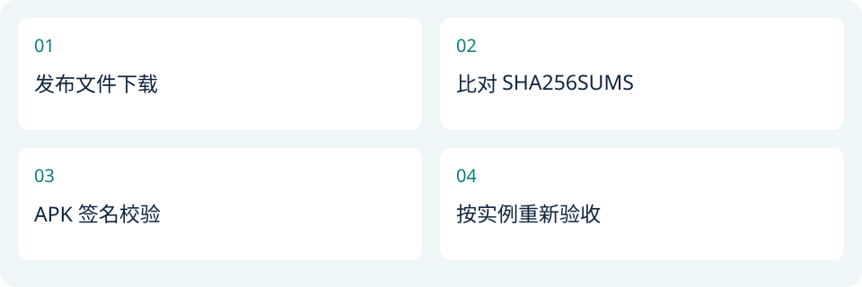
操作流程示意，非系统界面截图